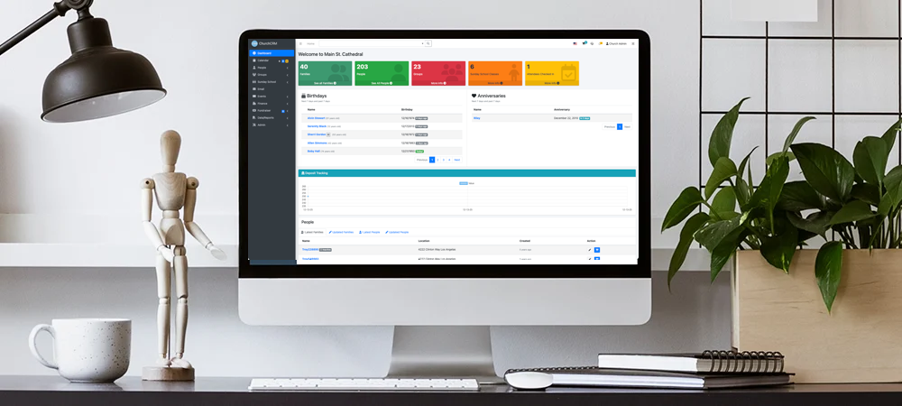

Experience ChurchCRM in Action
Our demo gives you full access to explore all features of ChurchCRM. Use it to learn how to manage your church's data, organize members, track finances, and much more.
Demo Information
Data: Regularly reset to demo data
Access: Available 24/7
Duration: No time limit per session
Import Data: Import your own demo data to test with realistic information
Note: Do not enter real or sensitive information. Data resets regularly.

What You Can Do
Explore these powerful features in the demo
Member Management
Organize and manage your congregation with detailed member profiles, contact information, and family relationships.
Financial Tracking
Track giving, manage pledges, create reports, and maintain transparency in your church's finances.
Event Management
Schedule services, organize events, manage attendance, and coordinate church activities.
Sunday School
Organize classes, track attendance, manage rosters, and coordinate religious education programs.
Communication Tools
Send emails, manage mailing lists, and stay connected with your congregation through integrated messaging.
Maps & Geography
Visualize your congregation on interactive maps and identify members by location.
Reports & Analytics
Generate insightful reports on attendance, giving, and other key metrics for your church.
Volunteer Management
Organize volunteers, track service hours, and coordinate ministry opportunities.
Global Language Support
45+ languages by region — serving churches worldwide
Europe & Central Asia (23 languages)
Americas (6 languages + variants)
Africa & Middle East (5 languages)
Asia & Pacific (10 languages)
Your Language Missing?
Help translate ChurchCRM into more languages! Join the translation community and contribute.
Join Translation TeamWant to Add a Locale?
Once a translation reaches 90% completion, learn how to integrate it into the system.
Adding Locales GuideImport Your Demo Data
Get started quickly with realistic sample data
How to Import Demo Data
ChurchCRM includes a built-in demo data importer that populates your system with realistic sample data on fresh installations:
📊 What Gets Imported:
- 50+ Families - Diverse household structures including nuclear families, single parents, and empty nesters
- 175+ People - Individual records with names, birth dates, classifications, and notes
- 15+ Groups - Ministry groups, Bible studies, volunteer teams with member assignments
- Notes - Pastoral care history and contact records
- Optional: Events & Attendance, Financial Data, or Sunday School Classes
⚙️ How It Works:
- Install ChurchCRM on a fresh system
- Log in as administrator
- Navigate to Admin Dashboard → Demo Data card
- Click "Import Demo Data" and select optional modules
- Confirm the import (takes 10-30 seconds)
- System loads 50+ families with complete details, ready to explore
Fresh Installation Only: Demo data import is only available on brand-new installations with exactly 1 person (the admin user) to protect your production data.
100% Fictional: All demo data uses fake names, addresses, emails — perfect for testing without privacy concerns.
📖 Learn More
For detailed step-by-step instructions, configuration options, and troubleshooting, see the official documentation:
Ready to Take the Next Step?
Privacy & Security
ChurchCRM is open-source and can be self-hosted on your own servers, giving you complete control over your church's data.
Mobile Friendly
Access ChurchCRM from any device. Manage your church on the go with our mobile-responsive interface.